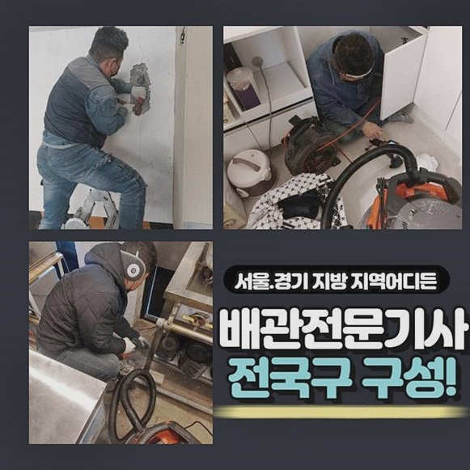
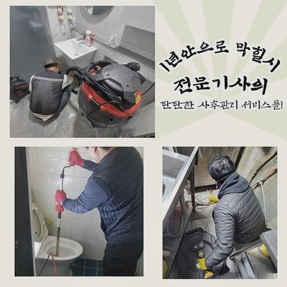
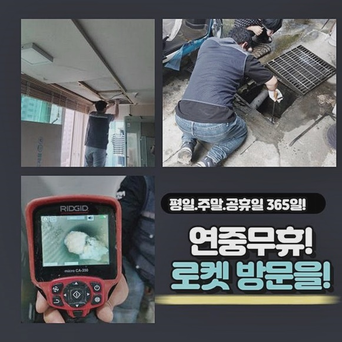
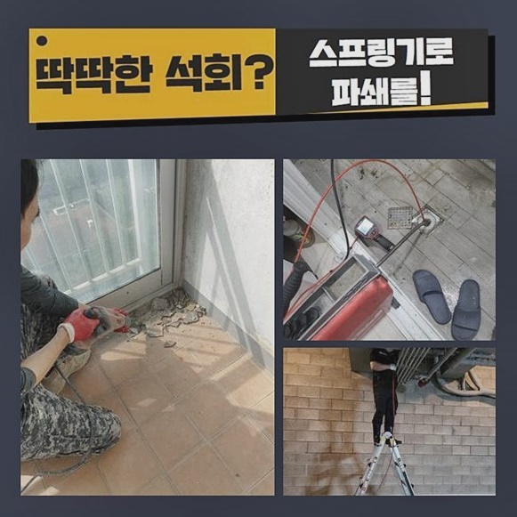
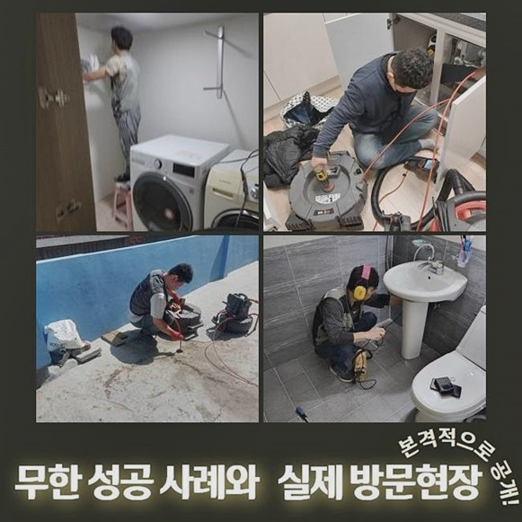
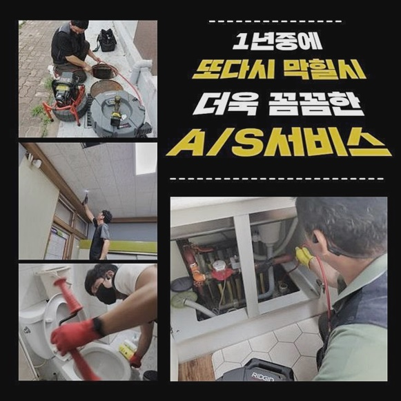

🏠 미추홀구 숭의동하수구뚫음 문학동 하수구뚫는비용 출장수리
용인시 처인구 배관막힘 전문 시공 후기

📋 작업 개요
- 위치: 용인시 처인구, 수원시 영통구, 화성시 동탄
- 서비스 유형: 배관막힘, 하수구청소, 고압세척, 내시경점검
- 작업 일시:
- 업체명: 하수구수사대 (010-5615-2118)
🔍 문제 상황
미추홀구 숭의동하수구뚫음 문학동 하수구뚫는비용 출장수리
많은사람이 모여서거주하는 다세대같은 거주방식들은 하수구시스템을 활용하는 빈도자체가 많으므로 배관을 뚫어달라고 문의가 많이들어와요
여러 주민들이 생활하면서 욕실 싱크대 배관을 거쳐서 이용했던 물을 내려보내면 주택에 설치 되어 있는 메인 하수관에 고여들어서 이물질같은게 쌓일 수밖에 없습니다
잔해물질들이 배수관쪽의 관을막게되서 하수도를 사용할수없도록 만들어지는거죠
막힘현상으로 하수도물이 깔끔하게 흘러나가지않으면 전문인을 부르셔야해요
최근에 방문했었던 작업내용을 토대로 설명드리고자하니 꼼꼼하게 살피시면 도움이되시리라 생각이들어요!
여러세대가 거주하는 일부의 댁에서 물빠짐이 정상이아니라서 불편하다고 문의했다고 하셨습니다
1차적으로 점검한곳은 전체세대에서 사용한물들이 전체로 모이게되는 메인관을 점검하는일이죠
종종 배수구가 막히는경우 가장 중요한것은 막히게된이유를 세세히 잡아내야만해요
어떤이유에서 막힘현상이 발현되었는지 주된원인이된 잔해물이무엇인지 파악하고있어야 알맞은 작업을통하여 상세한 하수구수리가 진행될수있죠

🔎 원인 분석
💡 전문가 진단: 정밀 진단 장비를 사용하여 슬러지의 고착 여부를 판명하고 타격/세척 작업을 실시했습니다.
바깥쪽 맨홀하수구에 안쪽을 살펴봤더니 물이역류하고 하수구로 배수가안되는 상황이었죠
막힌배관을 살펴봤는데 좀만더 방치한다면 건물에 살고계시는 전세대에서 배수상태가 느려지게 될것으로 확인되었는데요
아파트의경우 일층부터 막힘현상으로 인하여 불편한점들이 일어나게된답니다
2차피해가 이어지면 물이넘치거나 새버리는경우로 발생할수있어요
2차적인 현상들로 이어지지않도록 신속정확한 하수관수리가 진행되야만했어요
고인물은 작업시에 필수적으로 요구되는 석션도구를 사용해서 빨아들였어요
역류한물을 흡입한후 배수구안쪽을 살펴보고자 내시경카메라를 투입시키는데요
하수구안쪽은 육안만을 이용해서는 파악할수없기에 배관촬영기계가 구비되야만해요
하수구 현장이라면 배관카메라는 무조건적으로 사용하는 기계랍니다
이장비로 들여다봤더니 배관안의 이물이 달라붙게되어 막힘증세가 생긴것으로 확인되었고 배관을 검사받은지 오래된걸로 보였어요
하수구안쪽을 막아버렸던 오염물들이 한세대만 발생된것이아닌 이어져있는 배관속이 문제였었던 상태인것을 파악했기에 고압세척으로 청소가 필요했습니다

🔧 작업 과정
다양한 이유들로 하수도가막혀 상담을신청해요
어떤원인들로 의뢰하실지 알수가없기에 항상상시로 전문기기들을 챙기고있죠
공사현장마다 깔끔하게 작업하여 현상을 바로잡아야지만 반복하여 막히는문제가 발발되지않아요
저희업체는 최신식의 기기들을 가지고있으며 자주장비를 체크하고 깨끗한상태로 유지시켜요!
현장에내방하여 장비를 바로이용하는데 문제가없게끔 세세히 살피고있기에 막힘증세에대하여 신속하게 수리가가능해요
내시경카메라 모니터화면으로 오염물이 배관속을 막은이유와 작업계획에 관해서 상세히 설명드린다음 수리에 착수하게되었죠
배관고압세척은 하수도작업시 많이사용하는 수리방법이죠
효과가크지만 잘못사용하면 배관파손을 발생시키는 경우가될수있어 현장경험이 풍부한 전문가가 사용해야해요
저희들의 경우에는 수리를 진행했던 이력이 풍부하신 작업자가 하수구상태를 꼼꼼히 들여다보고있으므로 염려마세요!
거센고압의 물을사용하여 하수구내부에 쌓여있는 찌꺼기들을 제거하고 오염물이 잔뜩붙어있는 하수구벽쪽을 깨끗하게 소거하며 스케일링을 진행했습니다
여러번이나 이과정을 진행하며 잔해물질이 깔끔하게 제거될수있도록했죠
하수구막힘이 완벽하게 뚫리니 심각했던 악취도 사라졌어요
하수구청소가 빈틈없이 마무리된다면 악취문제또한 잡을수있으므로 철저한수리가 중요하답니다
막힘이발생된 하수도를 수리하기위해 전문설비를 찾으실때 실력이있는 전문가에게 의뢰하셔야해요
전용장비를 소유하고있는것도 중요한요소라고 말하지만 확실하게 사용할수있는 기사분께서 계신곳인지 세세히 살피셔야합니다
철수하기전에 세척이 마무리됐는지 내시경으로 체크해본뒤 배수는 정상인지 파악하고나서야 마칠수있었어요
스케일링중 바닥에 남겨진 이물은 청소를해드려 깨끗히 치웠습니다


✅ 작업 완료
아파트처럼 다같이사는 주거형태의 경우 주기적으로 배관점검을 받으시는게 좋겠습니다
배관막혔을때 일부세대만 곤란한것이아니라 전체적인 피해가나타나기에 막힘증세를 내버려두지말고 문제발견즉시 의뢰하길 바랍니다
하수구와 관련하여 의뢰하고싶은 사항이있다면 명확히 알려드리겠습니다
1시간내로 도착할수있으며 분명하게 수립계획을 보여드리니 걱정마세요!
이밖에도 궁금한것들이 있으실경우 아무때나 연락하셔서 여쭤보셔도 되니까 맘편히 연락주시면 친절하게 응대하여 맞이해드릴게요



⚠️ 하수구 배관 막힘 예방 및 관리 가이드
- ✅ 머리카락, 비닐, 물티슈 등 물에 분해되지 않는 이물질은 절대 흘려보내지 마세요.
- ✅ 기름기 많은 식기는 설거지 전 키친타올로 먼저 기름때를 닦아내세요.
- ✅ 주기적으로 배수구에 뜨거운 물을 가득 부어주어 유지방 고착을 방지하세요.
- ✅ 작업 후 1년 이내 재발 시 무상 A/S 보증 서비스를 제공합니다.
💡 핵심 정리
- 확실한 장비 작업(내시경 점검 및 샤프트 스케일링)으로 원인을 뿌리 뽑습니다.
- 작업 후 1년 이내에 동일한 부위 재발 시 100% 무상 A/S 서비스를 보장합니다.
- 서울 · 경기 · 인천 전 지역에 24시간 언제든 긴급 출동할 수 있도록 항시 대기 중입니다.
❓ 자주 묻는 질문 (FAQ)
🚨 용인시 처인구 배관막힘 문제로 고민이신가요?
정확한 원인 진단과 확실한 시공으로 재발 없는 해결을 약속드립니다.
24시간 긴급 출동 | 서울 · 경기 · 인천 전지역 | 1년 내 재발 시 무상 A/S